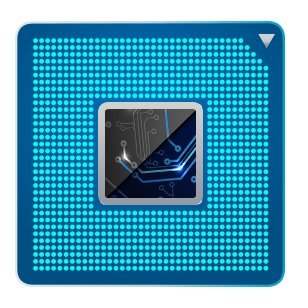

IBU ESD Electronics Club
NodeMCU Workshop
Control an LED
Press the button to turn the LED on or off.
Turn on
Turn off
RGB Lightshow
Choose an LED color.
LDR Periodic Readings
Display the current voltage at LDR.
{{ voltage }} V